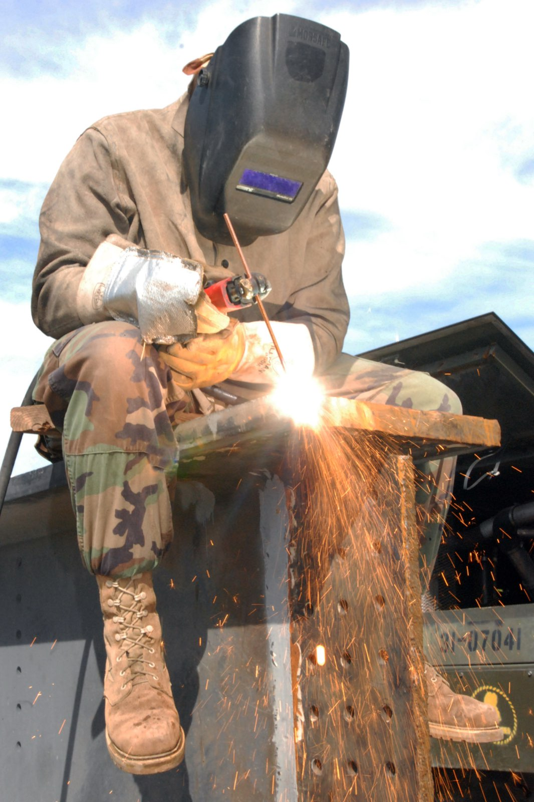

SAF 256 · YEAR 2 · SEMESTER 2
Industrial Safety
Staying alive around energy: hazard recognition, permits and isolation, machine guarding, hot work, confined spaces, and the incident lessons the Gulf's process industry paid for in blood.
10 lessons · 0 in the Core 60 · Primary texts:
- NPTEL: Industrial Safety Engineering (nptel.ac.in)
How people get hurt in plants
Energy-based hazard thinking: mechanical, electrical, pressure, thermal, chemical, gravity. Incident pyramids and their honest critique. Safety as engineering, not posters.
- Name the energy families and one hazard each contributes.
- Why do incident pyramids mislead as prediction tools?
Taught from — NPTEL: Industrial Safety Engineering
Risk assessment
Hazard identification, likelihood–consequence matrices, and the hierarchy of controls. Job safety analysis written for a real maintenance task. Residual risk stated, not hidden.
- Order the hierarchy of controls and defend why PPE is last.
- What makes a JSA suitable and sufficient?
Taught from — NPTEL: Industrial Safety Engineering
Lockout–tagout and energy isolation
Isolation points, stored energy, and verification of zero energy. Group lockout on complex equipment. The procedure that most directly keeps maintenance engineers alive.
- What does verification of zero energy add to isolation?
- Group lockout: who holds what?
Taught from — NPTEL: Industrial Safety Engineering
Permit-to-work systems
Permit types — general, hot work, confined space, line break — and their control logic. Permit interfaces between operations and maintenance. Why permits fail: signatures without verification.
- Why do permits fail — name two systemic causes.
- What triggers a line-break permit over a general one?
Taught from — NPTEL: Industrial Safety Engineering
Machine guarding
Point-of-operation, nip points, and rotating-shaft hazards. Guard types and interlocked access. The guard-defeat culture problem addressed as engineering.
- Why are interlocked guards defeated, and what design response works?
- Identify three nip points on a belt conveyor.
Taught from — NPTEL: Industrial Safety Engineering
Confined spaces
Definition, atmospheres, and gas testing. Entry roles and rescue planning that isn't fictional. Tanks, pits, and vessels — where multiple-fatality events happen.
- What three atmospheric tests precede confined-space entry?
- Why must rescue plans be non-fictional — what makes them real?
Taught from — NPTEL: Industrial Safety Engineering
Hot work and fire prevention
Hot-work hazards from welding lecture context; fire triangle and watch requirements. Flammable atmospheres and gas freeing. Fabrication-yard discipline as practiced at scale.
- What does a fire watch actually watch for, and for how long after?
- Why does hot work near tanks demand gas testing over time?
Taught from — NPTEL: Industrial Safety Engineering
Working at height and lifting
Fall protection systems; scaffolding basics; crane and rigging fundamentals with load charts respected. Dropped-object prevention. The physics of statics applied to staying alive.
- What does a load chart's radius column do to capacity?
- Name the anchor-point rule for fall arrest.
Taught from — NPTEL: Industrial Safety Engineering
Heat stress and Gulf conditions
Heat illness physiology and the WBGT logic of work-rest cycles. Summer work rules in Kuwait's climate. Hydration and acclimatization as engineering controls, not advice.
- Why is WBGT better than air temperature for Gulf work-rest cycles?
- What acclimatization does and doesn't protect against?
Taught from — NPTEL: Industrial Safety Engineering
Incident investigation
Evidence preservation, timelines, and causal analysis without blame-first shortcuts. Corrective actions that change systems, not just people. The investigation skill reused in reliability RCA.
- Why does blame-first investigation destroy the evidence you need?
- What distinguishes a corrective action from a countermeasure that survives?
Taught from — NPTEL: Industrial Safety Engineering